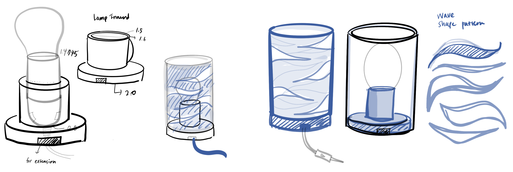
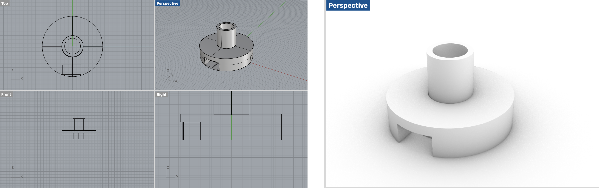

Getting Meshy! and Lamps!
Assignment 5
Part 1 : Modify the mesh of two STLs 🐱📦

Coming from an idea that cat loves boxes, I came up with an idea to combine stl mesh of a sitting cat and a box. I found this cute cat stl modeling at Thinggivers and downloaded it to modify the mesh. I imported the mesh file (stl format) in to Rhino and change the display and texture. And then I reduced the meshes to decrease the number of poly faces. I used the MeshToNurb command to create a closed mesh model.


Then I found this cute mario box in Thingivers, and reduces the mesh to decrease the polygon surfaces. The box size was too big for the cat model, so I scale down the box to make the cat fit in.

Part 2 : Design Lamp Innered 💡
For the lamp innered design,I collected some images and references to create a moodboard for inspiration and ideas. I have a blue color filament, so by using it, I want to have a lamp that creates a shadow of waves.
Moodboard & Inspiration

Lamp Measurement

Lamp Design

Lamp Modeling
